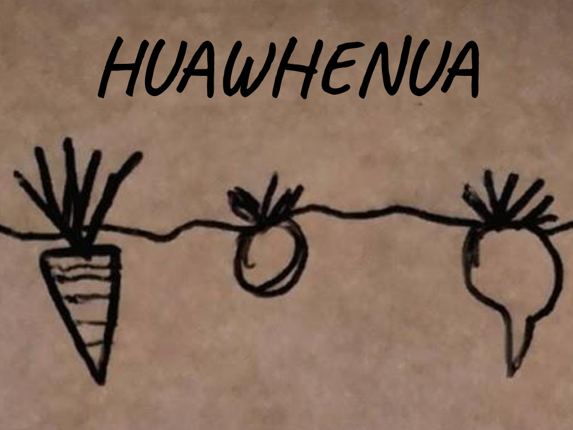

Ngā Whetū o Matariki
 He kēmu pai tēnei mō te akoranga o ngā whetū o Matariki.
Ka aho tētahi whetū i te pikitia. Kōwhiria te ingoa tika, te pikitia whakaari tika rānei. Ka whakamāramatia ngā pikitia i ngā wāhanga ki raro. Mehemea ka tika koe, ka whiwhi koe i kotahi paneke. Mehemea kāore koe i te tika, kāore koe e whiwhi i te paneke.
Ina tae koe ki ngā 20 māka, ka mutu te kēmu.
He kēmu pai tēnei mō te akoranga o ngā whetū o Matariki.
Ka aho tētahi whetū i te pikitia. Kōwhiria te ingoa tika, te pikitia whakaari tika rānei. Ka whakamāramatia ngā pikitia i ngā wāhanga ki raro. Mehemea ka tika koe, ka whiwhi koe i kotahi paneke. Mehemea kāore koe i te tika, kāore koe e whiwhi i te paneke.
Ina tae koe ki ngā 20 māka, ka mutu te kēmu.
Ko Rangi Matamua te kaituhituhi o te pukapuka ‘Matariki: Te whetū tapu o te tau. Hei tā a ia, e iwa ngā whetū o Matariki.
Mehemea ka tino whiti ngā whetū katoa o Matariki, he tohu tēnei o te ngahuru tikotikoiere. He māramatanga motuhake ki a ia whetū.
Te Māramatanga o ngā Whetū
Matariki
 Ko Matariki te whetū o te oranga. He tohu a Matariki o māngari, maungārongo a oranga hoki. Mehemea, ka māruru tētahi tangata, ā ka whiti a Matariki i te tau hou, he tohu tēnei, ka whakamātūtū ia. He wāhine ia.
Ko Matariki te whetū o te oranga. He tohu a Matariki o māngari, maungārongo a oranga hoki. Mehemea, ka māruru tētahi tangata, ā ka whiti a Matariki i te tau hou, he tohu tēnei, ka whakamātūtū ia. He wāhine ia.
 Tupuānuku
Ko Tupuānuku te tohu o te kai o te mara. Mehemea kei te whiti tēnei whetū, ka nui ngā huawhenua i ngā mara ā te tau ā muri ake nei. He wāhine ia.
Tupuārangi
Ko Tupuārangi te whetū e pā ana te kai o te rangi. I ngā tau e whiti ana tēnei whetū, he maha ngā manu i te rangi. He tāne ia.
 Waitī
Waitī
 Ko Waitī te tohu o ngā ika i ngā awa, ngā roto hoki. Mehemea kei te whiti tēnei whetū, he maha ngā ika ā tēnei tau. He wāhine ia.
Ko Waitī te tohu o ngā ika i ngā awa, ngā roto hoki. Mehemea kei te whiti tēnei whetū, he maha ngā ika ā tēnei tau. He wāhine ia.
 Waitā
Waitā
Ko Waitā te tohu o ngā ika I te moana. Mehemea ka mārama a Waitī, ka pai te hī ika i te moana. He tāne ia.
 Waipunarangi
Waipunarangi
Ko te kaupapa o Waipunarangi, ko te ua. Mehemea kua kitea pai tēnei whetū, ka iti te uanga i te tau. He wāhine ia.
 Pōhutukawa
Pōhutukawa
 Ko Pōhutukawa te tohu o te mate. Mehemea ka tino mārama a Pōhutukawa i te rangi, he tohu pai tēnei. Ka iti ngā mate i te iwi, ā te tau ā muri ake nei. He wāhine ia.
Ko Pōhutukawa te tohu o te mate. Mehemea ka tino mārama a Pōhutukawa i te rangi, he tohu pai tēnei. Ka iti ngā mate i te iwi, ā te tau ā muri ake nei. He wāhine ia.
 Hiwa-i-te-rangi
Hiwa-i-te-rangi
 Ko Hiwa-i-te-rangi te whetū o ngā wawata. Mehemea ka tino marama a Hiwa-i-te-rangi, ka tutuki ngā hiahia o te iwi. He wāhine ia.
Ko Hiwa-i-te-rangi te whetū o ngā wawata. Mehemea ka tino marama a Hiwa-i-te-rangi, ka tutuki ngā hiahia o te iwi. He wāhine ia.
 Ururangi
Ururangi
Ko te kaupapa o Ururangi, ko te hau. I ngā tau, ka tākorukoru a Ururanga, he nui ngā hau. He tāne ia.
Kei hea a ‘Matariki’?
Tuatahi, kimihia te kāhui whetū “Tautoru” – ko te ingoa Pākeha o taua kāhui whetū: “the pot”. Ka haere tonu ai, kimihia tētahi kāhui whetū e tapatoru ana te āhua. Ko Hyades te ingoa Pākeha o tēnei kāhui whetū - ko te mata o Taurus te pūru. Ki te whakamauī, ka kitea tētahi kāhui iti. Ko ‘Matariki’ te ingoa o tēnei kāhui. Ko Pleaides te ingoa Pākehā mō Matariki.